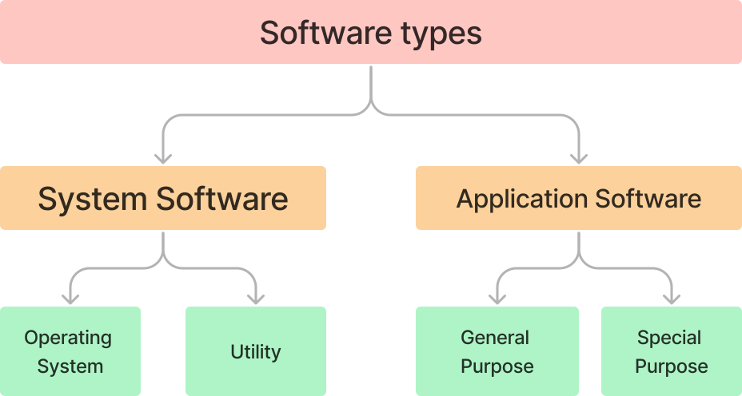

The student will be able to:
As you all know, a computer is a useful machine that works with an interaction of hardware and software. Hardware and software are interdependent with each other. A hardware needs a software to operate and a software cannot be utilised without the supporting hardware.
Hardware refers to the physical parts of a computer that you can see and touch, such as monitor, keyboard, mouse, printer, and the other components fixed inside the CPU cabinet. Software refers to the instructions or programs that tells a hardware what to do. Software enhances the capability of the hardware and directs the computer to perform specific types of activities.
A mobile phone is a hardware and all the applications it has are called software. Without the applications, mobile phone is simply a plastic case and without the hardware (mobile phone), these applications cannot be used.
There are two types of software: System software and Application software.
A system software is a collection of programs that helps to run a computer's hardware and the other programs. It manages the hardware resources and the other application software. It reads the data from the input devices and transfers the processed information to the output devices. Common examples of system software are: Operating System (Windows, Linux, Unix, macOS, Android, etc.), Utility Software (Disk Cleanup, Backup, Compression), Language Processor, and Device Drivers.
An application software is used to perform the specific types of jobs, like doing calculations, arranging data in an organised manner, designing professional documents, creating images, logos, etc. Word, PowerPoint, 3D Paint, Excel, are some commonly used application software.
Being a machine, a computer cannot do anything on its own. It requires a specific instruction to perform each and every task. Further, the instructions are converted into a language, which a machine understands. It means that the user cannot communicate with a computer directly. An interface is required between the user and computer hardware.
The operating system acts as an interface between the user and computer hardware. The computer interprets the instructions given by the user with the help of an operating system. It controls and manages the overall operations and internal working of a computer system. It is the main software that makes a computer work and also provides a platform for running an application software. Microsoft Disk Operating System (MS DOS), Microsoft Windows, Linux (Ubuntu, Red Hat) and UNIX (macOS, Solaris, and AIX) are examples of operating systems.
The working of an operating system is just like a school principal. A principal has various responsibilities to perform, such as managing the school, supervising teachers, maintaining discipline, analysing the examination schedule, timetable, curriculum, meeting parents, and so on. Likewise, a number of services is provided by an operating system. Imagine, what will happen if there is no principal in a school. Everything will become unorganised. Similarly, if there is no operating system in a computer, it will not be able to perform any operation for you.
Earlier, programmers had to design the application in accordance with the internal hardware structure of a computer. The operating system was needed to allow the programmers to design the applications without any details on the internal structure of the computer.
An operating system acts as a central coordinator between hardware and software. It manages the overall resources, resolves conflicts, and tries to optimise the performance of the system.
When you turn on your computer system, the Basic Input Output System (BIOS) starts up your computer and checks whether all of the attachments are in place and operational. Then, it loads the operating system into your computer's main memory (RAM) from the hard disk drive. After loading of the operating system, the application or utility software empowers the user to perform a variety of functions on the computer, such as solving problems, creating documents, playing games, etc.
Following are the major functions of an operating system:
This is one of the most important functions of an operating system. The operating system ensures that every process or application receives enough processor time to function properly. It also tries to use as many processor cycles as possible for real-time work. These are the processes rather than applications that are controlled, managed, and executed by the operating system.
An operating system manages the sharing of internal memory among multiple applications. It keeps track of the memory used by each process and also takes care of the fact that one process should not consume the memory allocated to another process. It makes efficient use of different types of memory (RAM, Cache, etc.) within the system to ensure proper execution of every process.
The bootstrap loader is a small program that loads the operating system into memory and allows it to begin its work.
A computer system uses a lot of data, which is stored on the secondary storage devices. The operating system keeps track of the information regarding the creation, deletion, transfer, copying, and storage of files in an organised manner. It also maintains the integrity of the data stored in these files, including the file directory structure.
An operating system plays a very important role in coordinating and controlling the various Input/Output (I/O) devices attached to the computer system. It receives requests from these devices, performs a specific task, and forwards them to the requesting process. That is why, it states that an OS handles the I/O operations of a computer system.
The built-in security modules of any operating system protect the resources and the information stored on a computer system from the unauthorised access.
An operating system determines and maintains a specific order in which the various jobs are executed in the computer system. It takes care of the processor time being allocated to the applications based on their priority.
An operating system provides a systematic user interface that facilitates and structures the interaction between the user and a computer. It can either be a Character User Interface (CUI) or Graphical User Interface (GUI).
In the past three decades, computers have taken a giant stride towards excellence and high performance. From bulky physical configurations, computers have miraculously transformed into one of the most powerful, yet completely portable devices. Similarly, the operating systems have also been developed at a rapid pace to serve the needs of the users. Following are the different types of operating systems:
An operating system that allows only a single user to perform only one task at a time is known as a single-user, single-tasking operating system. It was the initial version of the operating system. A single-user, single-tasking operating system occupies less space in memory. Microsoft DOS and Palm OS are good examples of modern single-user, single-tasking operating systems. Due to their limited features, they are no longer in use nowadays.
An operating system that allows only one user to run several programs at a time is called the single-user, multi-tasking operating system. For example, a Windows user can write a note in a word processor while downloading the file from the internet. This type of operating system is commonly used for desktop and laptop computers. Windows, Linux, and macOS are some examples of single-user, multi- tasking operating systems.
A multi-user operating system allows multiple users to access applications or resources that are running on a single network server, concurrently. The single network server is termed as a Terminal server. UNIX, Virtual Memory System (VMS), and Mainframe OS are examples of the multi-user operating systems. It is commonly used in large organisations, such as in the government offices, universities, and mainly on servers, such as the Ubuntu server or Windows server. These servers allow several users to simultaneously access the operating system, applications and the other resources.
A real-time operating system is designed to handle real-life scenarios and problems. Such operating systems have the capability to prioritise the processes, minimise the execution time, and work independently with no interdependencies. This type of operating system is used when the time span required to react to an input is rigid and time-bound. Even a microsecond of delay will cause the system to fail. Air traffic control, robots, weapons system, and industrial control systems are some examples of the real-time operating systems.
A distributed operating system runs on a set of computers that is located in different geographical areas, interconnected by a network. It controls these interconnected systems and makes them appear as a single computer. It allows all the linked machines to access data and software, and this process takes over the common network from different computers, irrespective of their location on the globe.
In computing, the user interface refers to the hardware-software mechanism by which a user interacts with the computer to provide instructions. The operating system of a computer acts as an interface through which a user gives commands or instructions to the computer and also receives messages from the computer. Without an operating system, the interaction between a user and computer is not possible.
Types of User Interfaces
Following are the two types of the user interfaces that have evolved with the advancement in the technology:
This type of interface requires the user to type commands in order to interact with the computer system. This type of interface is not a good choice for the beginners as they have to memorise a good range of different commands. Modern computers have a modified version of CUI called Command Line Interface (CLI).
DOS, Windows Command Prompt, and Unix are the popular examples of CUI.
This type of interface is graphics-based and interactive in nature. Different devices, such as mouse, keyboard, etc., are used to interact with the system. GUI is more user- friendly as unlike CUI, it does not require the user to memorise the commands, instead the user uses different menus, dialog boxes, and icons to communicate with the system. Windows is the most popular GUI based operating system.
Following are the advantages of GUI over CUI:
There are two types of real-time operating systems: Hard real-time and Soft-real time. Hard real-time systems guarantee that critical tasks are completed in time. Soft real-time systems are less restrictive and have limited utility than hard real-time systems.
The ability to perform more than one task together at one time is called multi-tasking. An operating system, which is capable of doing multiple tasks by using a common processing resource, i.e., only one CPU, is called the multi-tasking operating system.
Memory, hard disk, and virtual memory are managed better in the multi-tasking operating system.
Basic Input/Output System (BIOS) is small memory chip on the motherboard, which instructs the computer, how to perform basic functions, such as booting and configuring the hardware.